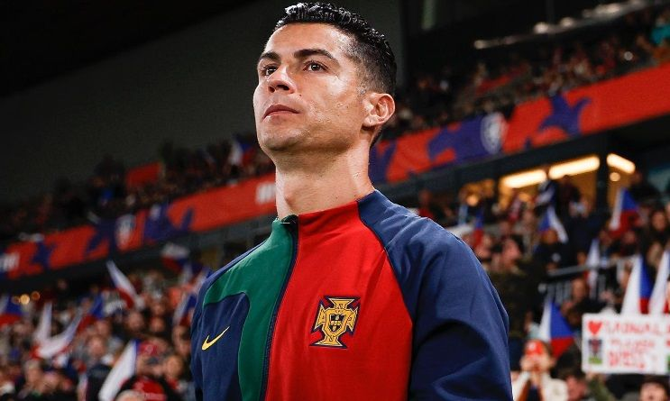
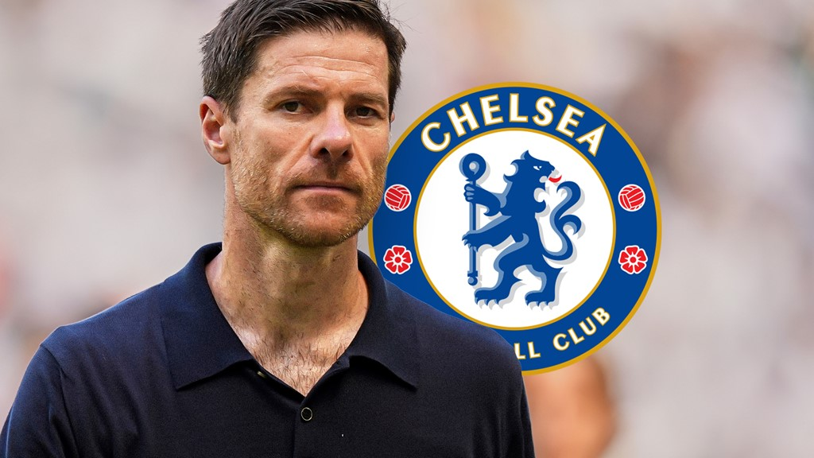
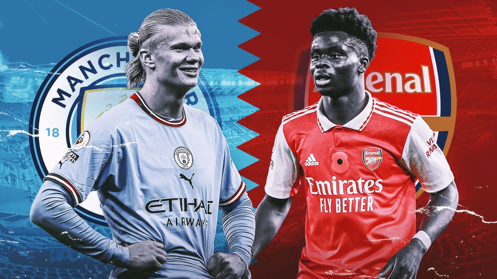
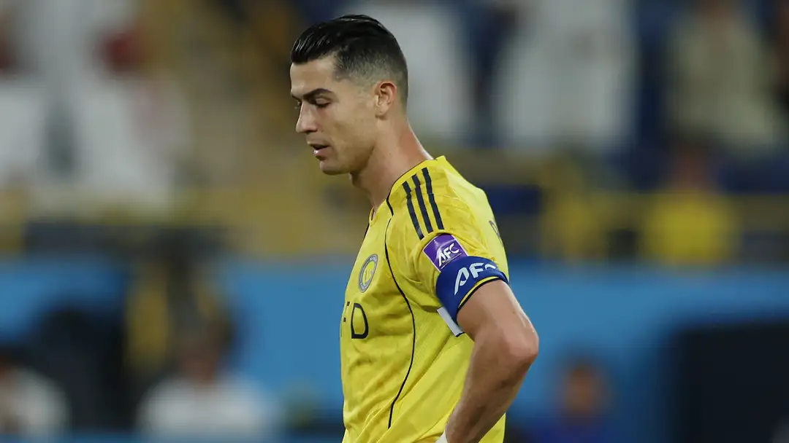
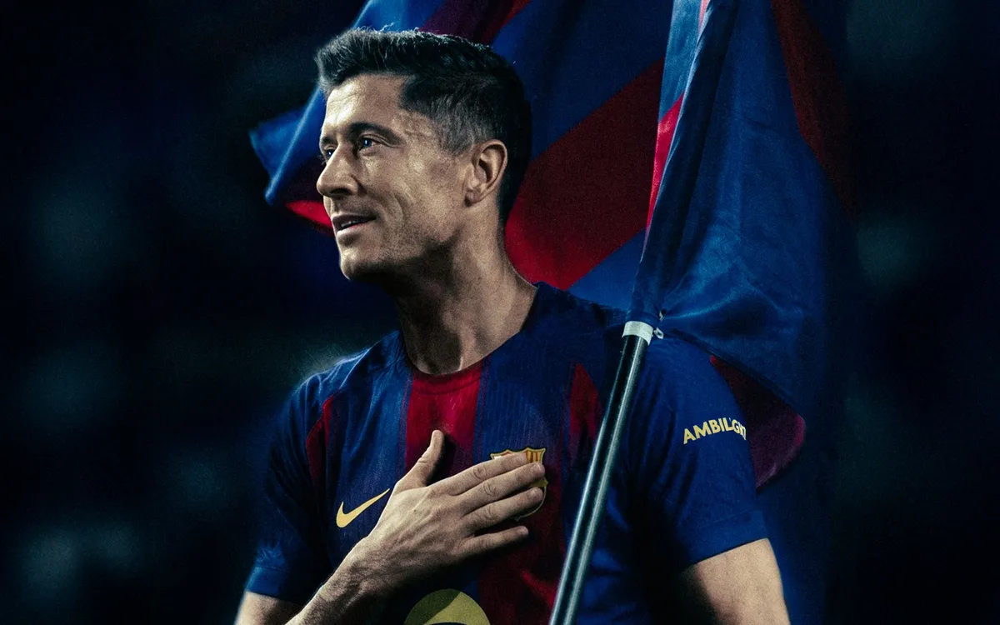

LATEST NEWS
Final Showdown: The Road to Munich Starts Tonight
Everything you need to know about the tactical lineups and key player matchups.

Rumors are swirling in Madrid as Jose Mourinho is spotted meeting with Florentino Perez...

At 41, Ronaldo is set to lead Portugal once again. Can he secure the only trophy missing from his legendary cabinet?

Reports indicate Todd Boehly has made Xabi Alonso his number one target. Will the tactical mastermind bring his dominant style to London?

With only one match week remaining in the season, Manchester City and Arsenal are neck-and-neck in an epic fight for the English crown.

Al-Nassr bow out of the Asian Champions League after a tense penalty shootout, leaving Cristiano Ronaldo frustrated in his quest for continental glory.

An emotional day for football fans as Robert Lewandowski announces he will play his final match at the club level this season, capping off a legendary career.